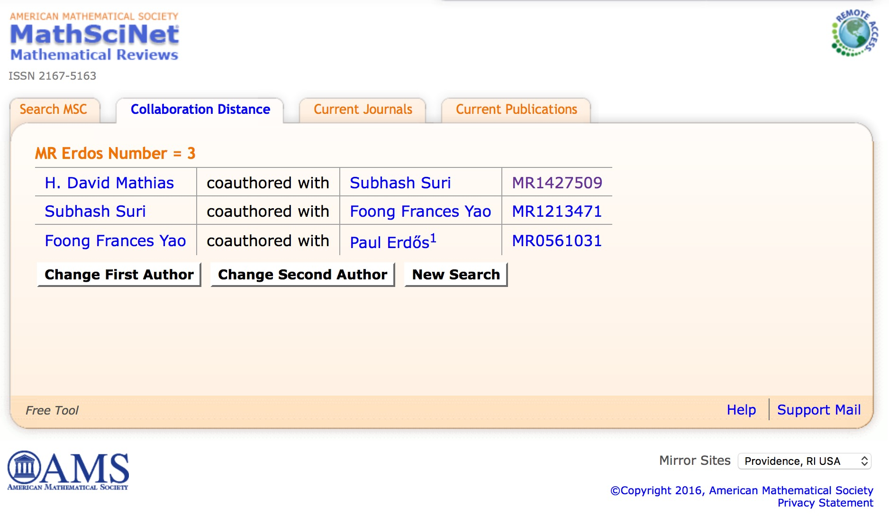

About Me
I received a B.S. in Computer Science from the University of Delaware and an M.S. and D.Sc. in Computer Science from Washington University in St. Louis. I have been on the faculties at Indiana University, the Ohio State University, Florida Southern College, and currently, the University of Wisconsin - La Crosse.I enjoy hiking in the mountains (not in Florida) and photography, hence the banner photos on this site. My sons and I are fans of The Grand Tour (formerly Top Gear) and English Premiere League football.
Random Facts
- My Erdös Number is 3.

Calculate your Erdös Number - My academic genealogy:
- My disertation advisor was Sally Goldman at Washington University
- Sally's dissertation advisor was Ron Rivest at MIT. Rivest is a recipient of the ACM Turing Award.
- Ron's dissertation advisor was Bob Floyd at Stanford. Floyd is a recipient of the ACM Turing Award.
- Bob didn't have a dissertation advisor. He didn't write a dissertation because he didn't have a doctorate. Donald Knuth has written that, "When I drafted the material for a monograph on the subject of parsing in 1966, I came to the conclusion that only five really good papers about compilers had been written so far, and Bob had been the author of all five."
- My h-index is 9.
{kind=link}